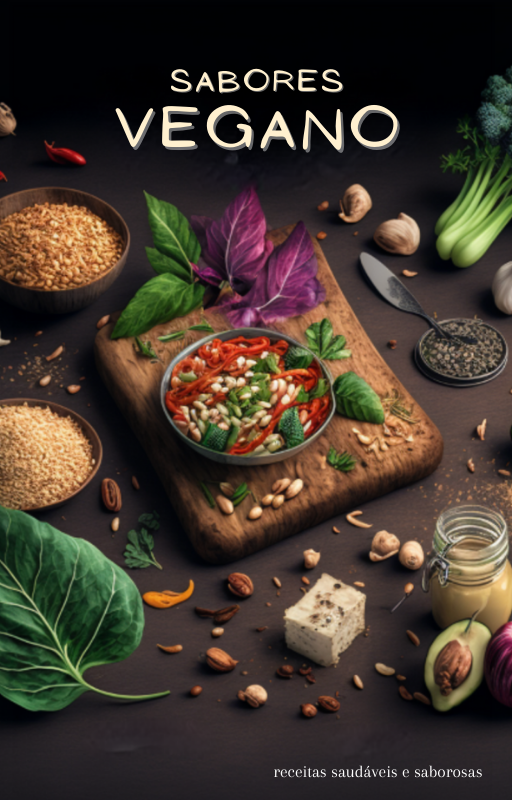

Sabores Vegano - receitas saudáveis e saborosas
"Sabores Vegano - receitas saudáveis e saborosas" é o guia definitivo para incluir pratos deliciosos e saudáveis na sua dieta vegana.
"Este ebook vegano é incrível! As receitas são fáceis de seguir e deliciosas. Eu amei as opções de panquecas e smoothies, mas também fiquei surpreso com as receitas de jantar e lanche. Altamente recomendado para qualquer pessoa que queira explorar uma alimentação vegana saudável e deliciosa."

Hélder Ferreira
Co-Founder, Startup Week
"Este é o melhor livro de receitas veganas que já comprei. As receitas são incrivelmente variadas e as instruções são fáceis de seguir. Eu particularmente amei a receita de ovo vegano, é incrível como fica parecido com o ovo real. Recomendado"

Luisa Carmem
Co-Founder, Startup Week
"Este ebook é uma verdadeira bênção para mim, como vegano iniciante. As receitas são simples e deliciosas, e eu amei a variedade de opções para todas as refeições."

Joana Silva
Frontend Developer, Company Lorem

Novo
E-book
E-book